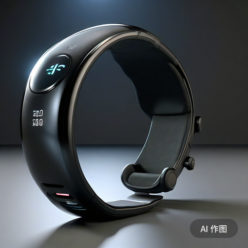

我精心打造了一款名为“明途”的智能生活助手App，它不仅仅是一款应用，更是您日常生活中不可或缺的智能伴侣。通过深度融合前沿的AI技术，“明途”能够深刻理解并学习您的个人习惯与偏好，为您量身定制一系列高效、贴心的服务。
在日程管理方面，“明途”能够智能识别并整理您的会议、约会、纪念日等重要事件，通过直观的日历视图和贴心的提醒功能，确保您不再错过任何重要时刻。同时，它还支持多平台同步，无论是手机、平板还是电脑，都能随时随地查看和管理您的日程安排。
健康监测方面，“明途”集成了高精度的传感器和先进的算法，能够实时监测您的心率、血压、睡眠质量等关键健康指标，并为您生成详细的健康报告。结合AI健康管理系统，它还能根据您的身体状况提供个性化的健康建议和改善方案，助您保持最佳的身体状态。
学习提升方面，“明途”拥有丰富的在线学习资源，包括课程视频、电子书籍、知识问答等，涵盖了多个领域和层次。通过智能推荐系统，它能够根据您的学习需求和兴趣偏好，为您推荐最适合的学习资源，让学习变得更加高效和有趣。
旅行规划方面，“明途”则化身为您的私人旅行顾问。它不仅能够根据您的出行时间和预算，为您推荐最合适的旅游目的地和行程安排，还能提供实时的天气、交通、住宿等信息查询服务。此外，“明途”还支持与好友共享旅行计划，让您在旅途中也能享受与亲朋好友的互动和分享。
更令人惊喜的是，“明途”还具备情感识别功能。通过先进的自然语言处理和情感分析技术，它能够感知您的情绪变化，并在您情绪低落时提供温馨的问候和鼓励。这种人性化的关怀让“明途”不仅仅是一个工具，更是一个能够理解您、陪伴您的贴心伙伴。
总之，“明途”智能生活助手App以其全面的功能、智能的推荐和贴心的服务，致力于为您打造一个更加便捷、健康、有趣的生活方式。让我们一起携手“明途”，开启智能生活的新篇章！
在科技与健康的深度融合时代，我，一位满怀热情的软件工程师，经过无数个日夜的精心研发，终于推出了革命性的智能运动穿戴设备——“动界先锋”。这款设备不仅仅代表了科技的进步，更是对现代健康生活方式的深刻理解和追求。
“动界先锋”以其卓越的性能和全面的功能，重新定义了智能穿戴设备的标准。从基础的运动监测开始，它能够准确无误地追踪您的心率、步数、距离、速度以及卡路里消耗等关键数据，让您对每一次运动的成果都有清晰的认识。但我们的目标远不止于此，通过深度学习和大数据分析技术，“动界先锋”能够深入理解您的运动习惯、体能状况以及健康目标，为您量身打造个性化的运动计划和健康改善方案。无论是减脂塑形、增肌训练还是耐力提升，它都能成为您最得力的助手。
更令人惊叹的是，“动界先锋”还融入了丰富的社交互动功能，让运动变得更加有趣和充满动力。您可以随时随地与亲朋好友分享您的运动成果和心得，通过相互鼓励和比较，激发更多的运动热情和动力。同时，我们还为您准备了一系列精彩的线上挑战赛和活动，让您有机会与全球的运动爱好者一较高下，感受竞技的乐趣和成就感。此外，加入我们的专属社群，您还能结识更多志同道合的朋友，共同探讨运动知识、分享健康生活的小技巧，让运动成为您生活中不可或缺的一部分。
我们深知，健康是人生的基石，而运动则是保持健康的重要途径。因此，“动界先锋”智能运动穿戴设备始终致力于为您提供最全面、最个性化的运动健康解决方案。我们相信，通过科技的力量和运动的魅力，我们能够引导更多人走向健康、积极的生活方式，共同创造更加美好的未来。让我们一起，携手“动界先锋”，开启健康运动的新篇章，成为自己健康生活的掌控者和引领者！
我希望通过这款产品，鼓励更多人关注健康、享受运动的乐趣。